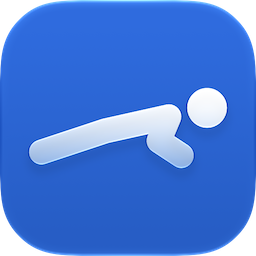
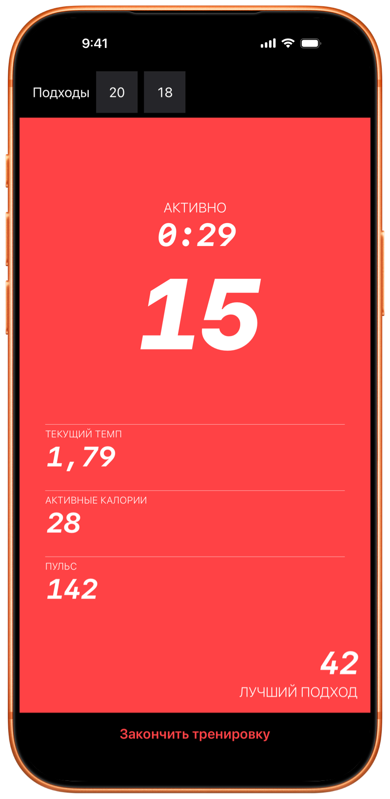
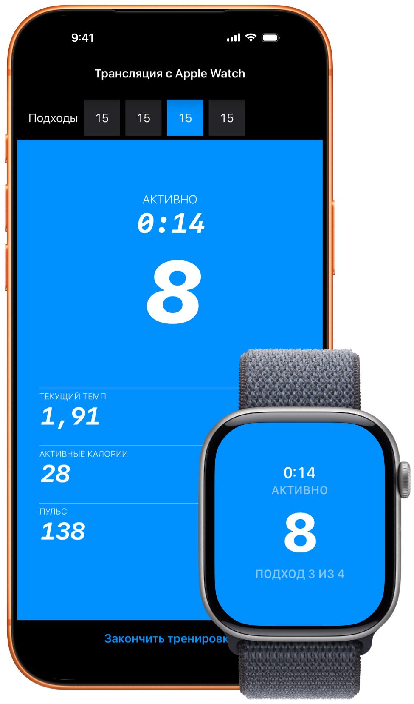

Потрясающее приложение
«Мне очень нравится это приложение. Именно простота делает его лучшим!»
Тренировки отжиманий для iPhone, iPad и Apple Watch

Дойдите до 100 отжиманий в своем темпеСледуйте программе или тренируйтесь свободно. Pushanova считает отжимания на iPhone, iPad и Apple Watch.

Можно начать бесплатно. Без аккаунта. Без рекламы.

В программе 50 уровней. Начните с любого уровня или тренируйтесь свободно и сами выбирайте подходы. Можно также записывать подходы отжиманий во время HIIT или силовой тренировки.
Pushanova не требует ежедневного или еженедельного расписания. Можно повторять уровень и брать дни отдыха. За перерыв нет штрафа.

Положите iPhone или iPad на пол или начните на Apple Watch. Короткий обратный отсчет дает время занять положение.
Pushanova автоматически считает отжимания и записывает подходы, темп, время и калории. Вы сами решаете, сколько отдыхать: можно продолжить раньше или отдыхать дольше.
Можно начать и завершить тренировку на Apple Watch без iPhone рядом. Вместе Apple Watch считает отжимания, а iPhone показывает ту же тренировку.
Pushanova сохраняет каждую завершенную тренировку. История показывает, как меняются занятия со временем.

«Мне очень нравится это приложение. Именно простота делает его лучшим!»
«Отлично. Оно помогает мне делать больше отжиманий и мотивирует продолжать прогресс.»
«Теперь я могу делать так много отжиманий! Написал наш 13-летний сын, которого это приложение очень мотивирует.»
«Мне нравится это приложение. Недавно я решил узнать, как быстро смогу дойти до 100 отжиманий. Я не мог найти приложение, которое делало бы это просто и по доступной цене, пока не нашел это. Мне нравится, насколько оно чистое. Разработчик также быстро реагирует на отзывы.»
Отзывы из App Store слегка отредактированы для краткости и ясности.
Отслеживание отжиманий на iPhone и iPad не делает фотографии и не записывает, не сохраняет и не загружает видео. Pushanova не использует камеру, чтобы вас идентифицировать.
Pushanova не требует аккаунта, не продает ваши данные и не содержит рекламы. Данные тренировок остаются на ваших устройствах и в личном аккаунте iCloud, когда синхронизация включена. С вашего разрешения завершенные тренировки можно сохранить в Apple Health.
Активную тренировку можно восстановить, если Pushanova закроется или будет прервана.
Нет. Pushanova может отслеживать отжимания с iPhone или iPad. Apple Watch добавляет отслеживание по запястью и поддерживает отжимания с возвышения на скамье и турнике.
Да. Можно начать и завершить тренировку на Apple Watch, когда iPhone не рядом. Приложение Watch сосредоточено на тренировках. История тренировок и аналитика доступны на iPhone и iPad.
Когда вы используете Apple Watch и iPhone вместе, Apple Watch может считать отжимания, а iPhone показывает синхронизированную тренировку.
На iPhone и iPad фронтальная камера измеряет изменения расстояния между вашим лицом и устройством. На Apple Watch Pushanova анализирует движение запястья. Также можно включить настройку, которая считает одно отжимание при каждом нажатии на экран.
Да. На iPhone Pushanova может использовать другой датчик на устройстве, если доступ к камере недоступен. И на iPhone, и на iPad можно включить подсчет нажатием на экран. Apple Watch не использует камеру.
Нет. Автоматический подсчет не делает фотографии и не записывает, не сохраняет и не загружает видео. Камера только измеряет расстояние, и Pushanova не использует ее, чтобы вас идентифицировать.
iPhone и iPad поддерживают обычные отжимания от пола и отжимания с колен. Apple Watch также поддерживает отжимания с возвышения на скамье или турнике.
Отжимания на параллельных рукоятках с ладонями друг к другу не поддерживаются. Отжимания на кулаках могут работать, но подсчет может быть менее точным.
Ни один метод автоматического отслеживания не считает каждое движение идеально. Положение устройства, техника и скорость могут влиять на результат. После тренировки можно исправить число отжиманий в каждом существующем подходе.
Можно начать с первых уровней, в которых небольшие подходы. Отжимания с колен поддерживаются. Можно повторять уровень и прогрессировать в своем темпе.
Да. Можно начать с любого уровня или тренироваться свободно. Pushanova может записывать подходы отжиманий между раундами HIIT или силовыми упражнениями.
В программе 50 уровней в трех этапах. Каждый уровень — структурированная тренировка с заранее заданными подходами и целями по отжиманиям. Финальный уровень — один подход из 100 отжиманий.
Можно начать с любого уровня, повторить уровень или перейти к другому. Первые 10 уровней бесплатны. Pushanova Premium открывает уровни 11–50.
Да. Можно завершить уровень в одной тренировке и тренироваться свободно в другой. Также можно продолжить свободную тренировку после завершения уровня в той же сессии.
Да. Pushanova не требует ежедневного или еженедельного расписания. Можно повторять уровни, брать дни отдыха и возвращаться к программе, когда будете готовы.
Во время тренировки уровня Pushanova предлагает 90 секунд отдыха между запланированными подходами. Можно продолжить раньше или отдыхать дольше. В свободной тренировке нет фиксированной цели по отдыху.
Нельзя заранее собрать и сохранить готовую последовательность подходов. В свободной тренировке вы решаете, сколько отжиманий и подходов выполнить во время занятия, а Pushanova записывает тренировку.
Да. С вашего разрешения Pushanova сохраняет завершенные силовые тренировки в Apple Health, включая длительность, активные калории и пульс, когда он доступен. Число отжиманий и подходов в Apple Health не сохраняется.
Доступ к Apple Health обязателен для тренировок на Apple Watch. На iPhone и iPad он необязателен.
Да. Pushanova оценивает активные калории даже без устройства для измерения пульса. Пульс может поступать с Apple Watch, совместимых наушников с пульсометром или Bluetooth-монитора сердечного ритма.
Измерение пульса совместимыми наушниками требует iOS 26 или новее на iPhone либо iPadOS 26 или новее на iPad.
Да. Pushanova — полноценное приложение для iPad с автоматическим подсчетом, программой на 100 отжиманий, свободной тренировкой, историей тренировок, прогрессом, аналитикой и Apple Health.
Да. Можно начать и сохранить тренировку без интернета. Синхронизация iCloud возобновляется, когда устройство снова онлайн. Для покупок в App Store нужен интернет.
Нет. Pushanova не требует аккаунта или членства. Можно пользоваться приложением без адреса электронной почты и пароля. Pushanova Premium необязателен и покупается через App Store.
Да. Бесплатно доступны тренировки без заранее заданных целей, первые 10 уровней и автоматический подсчет на iPhone, iPad и Apple Watch. Pushanova не содержит рекламы.
Подходящие новые подписчики могут три дня бесплатно попробовать годовую подписку. Она начинается автоматически, если не отменить ее до конца пробного периода. Разовая покупка навсегда не включает пробный период, а App Store показывает цену до покупки.
Можно тренироваться свободно сколько угодно. Первые 10 уровней и автоматический подсчет тоже бесплатны. Начните тренировку на iPhone, iPad или Apple Watch.

Без аккаунта. Подписка не обязательна. Без рекламы.